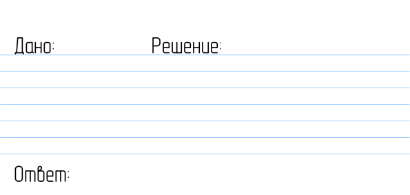

Глава 1. Движение
— М.В. Ломоносов
Физика создает модели, которые описывают реальность с помощью математики. Физические модели достигли поразительного прогресса, но до сих пор ни одна модель полностью не соответствует реальности.
Традиционно изучение физики начинается с механического движения.
Классическая механика, основанная на принципах Ньютона, описывает движение тел при скоростях, значительно меньших скорости света. Основные разделы механики:
- Кинематика (описание движения)
- Динамика (изучение причин движения)
- Статика (равновесие тел)
Изучение движения безотносительно к силам или энергиям, которые могут в нем участвовать, называется кинематикой.
Основная задача кинематики — математическое описание движения без рассмотрения его причин.
1.1. Материальная точка
Материальная точка — это воображаемая маленькая-маленькая точка, которая заменяет большой предмет, когда мы изучаем его движение.
Материальная точка – это идеализированная модель тела, размерами которого можно пренебречь, учитывая только его массу и положение в пространстве.
1.2. Положение тела (точки) на прямой
Символ \( x \) используется для обозначения положения в метрах. Возможно, вы привыкли использовать \( x \) по-другому, но в физике он зарезервирован для обозначения положения.
Решение
$$ \text{конечное положение} = 8848\,\mathrm{m} $$ $$\text{исходное положение} = 5150\,\mathrm{m}$$$$ \Delta x = x_{1}-x_{0}$$ $$ \Delta x = 8848\,\mathrm{м}-5150\,\mathrm{м}$$ $$ \Delta x = 3698\,\mathrm{м}$$
Доска
Калькулятор
1 миля = 1609 метров
1 километр = 1000 метров
Ответ:
$$ \Delta x = 3698\,\mathrm{m}$$2.297 миль
3.698 км.
Доска
Калькулятор
5.1. Понятие скорости
В современном мире, насыщенном транспортными средствами, представление о скорости формируется с ранних лет. Автомобильный спидометр демонстрирует текущее значение скорости в километрах или милях в час. Физически скорость характеризует быстроту изменения положения объекта в пространстве.
Равномерное движение
При движении с неизменной скоростью пройденный путь прямо пропорционален времени в пути, что выражается соотношением \( x = vt \). Если в момент времени \( t_0 \) тело находилось в позиции \( x = x_0 \), то:
или
при условии постоянства величины \( v \).
Значение скорости \( v \) может быть как положительным, так и отрицательным, указывая направление движения. Отрицательное значение означает перемещение в сторону уменьшения координаты \( x \).
На практике часто требуется преобразовывать единицы измерения. Используя метод подстановок (см. стр. 13), получаем:
Таким образом, \( 60\,\text{миль/ч} = 88\,\text{фут/с} \). Учитывая, что \( 1\,\text{миля} \approx 1,61\,\text{км} \), находим \( 60\,\text{миль/ч} \approx 96,6\,\text{км/ч} = 26,8\,\text{м/с} \).
Определение мгновенной скорости
При изменении скорости движения (разгоне или торможении) показания спидометра автомобиля не соответствуют расчётам по стандартной формуле скорости, если рассматривать большие промежутки пути. Точное совпадение наблюдается только для крайне малых перемещений.
В физике принято обозначать:
- \( \Delta x \) — малое изменение положения
- \( \Delta t \) — короткий промежуток времени
Мгновенная скорость определяется как предельное значение отношения перемещения к временному интервалу, когда последний стремится к нулю:
Это выражение идентично математическому определению производной координаты по времени. В дифференциальной записи:
Практический пример
Условие: Положение тела изменяется пропорционально квадрату времени: \( x(t) = At^2 \). Определить мгновенную скорость.
Решение:
Таким образом, в конкретный момент \( t_1 \) скорость составит \( v = 2At_1 \).
Общее правило дифференцирования степенных функций:
Рассмотрим альтернативный подход без использования производных. Для моментов времени \( t_1 \) и \( t_2 = t_1 + \Delta t \):
При \( \Delta t \to 0 \) второе слагаемое исчезает, подтверждая полученный ранее результат:

Примечание: под наклоном понимается тангенс угла наклона.
1.1. Кинематика
Основная задача кинематики — математическое описание движения без рассмотрения его причин.
— А. Эйнштейн